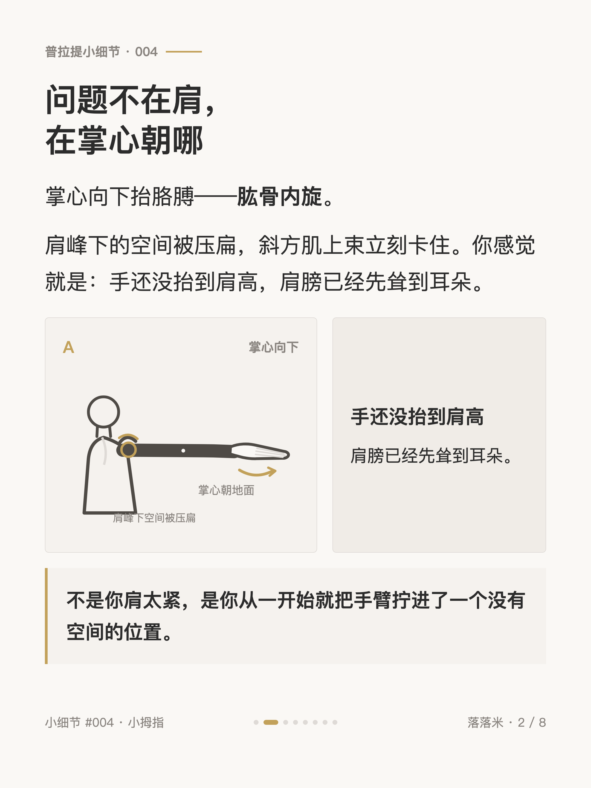
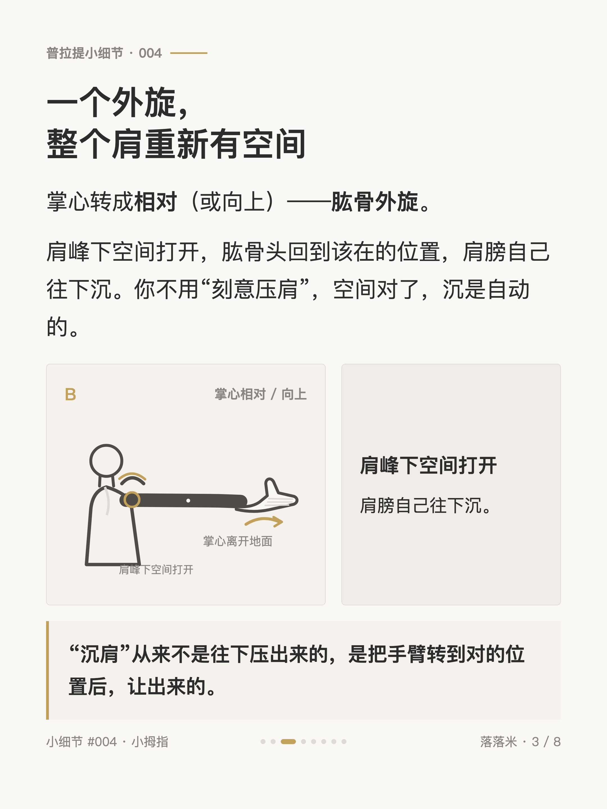
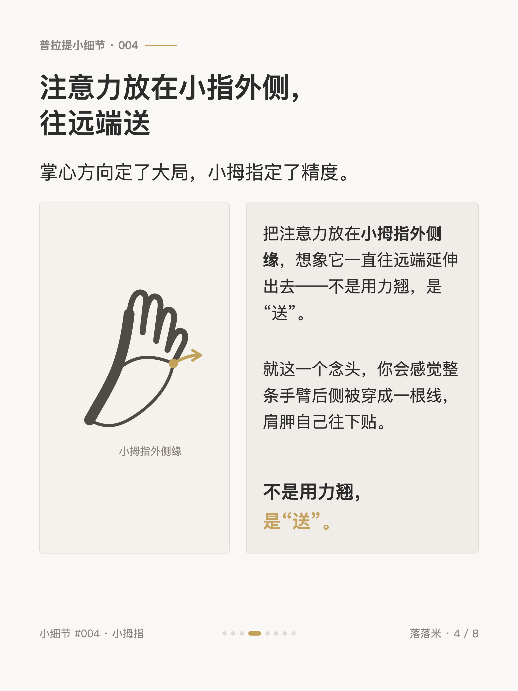
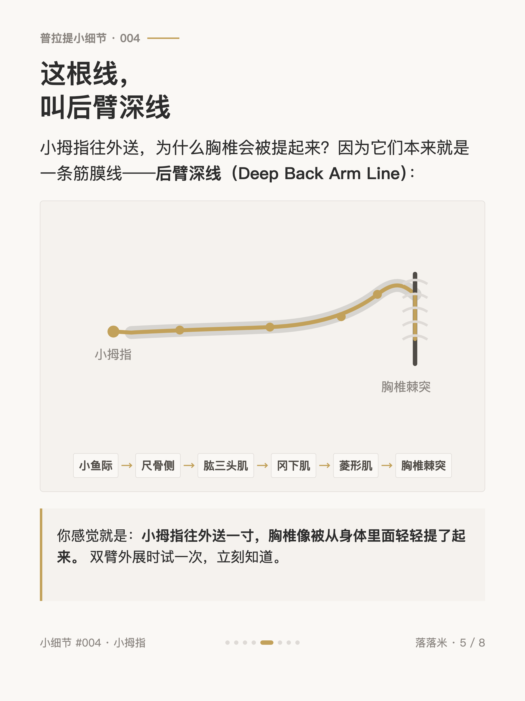
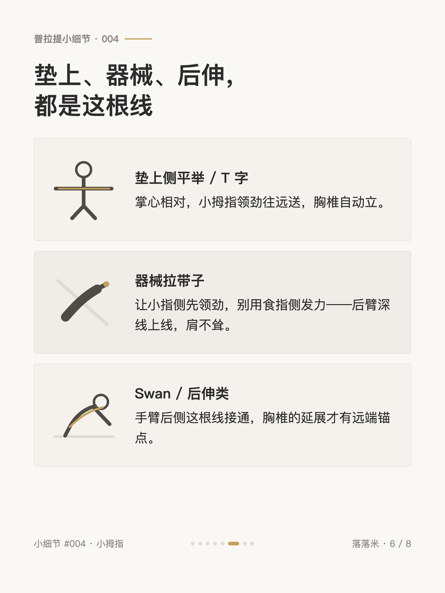
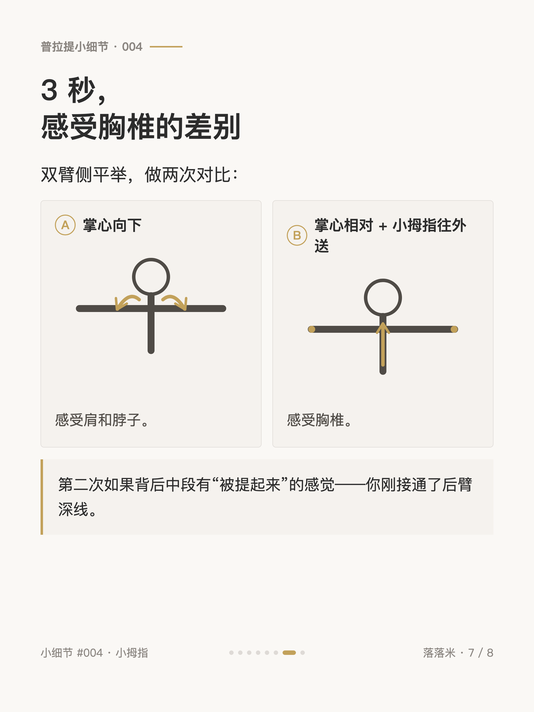
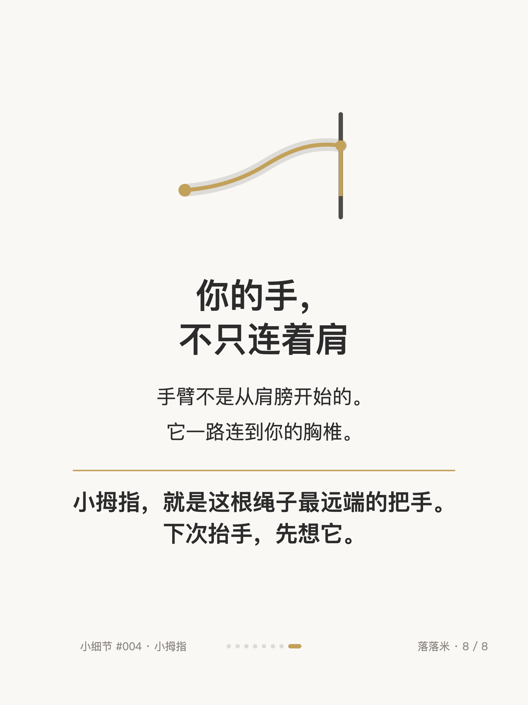

普拉提小细节 #004
小拇指，连着你的胸椎

1 / 8

2 / 8

3 / 8

4 / 8

5 / 8

6 / 8

7 / 8

8 / 8
← 左右滑动浏览全部卡片 →
抬手臂就耸肩，你以为是肩太紧，其实从一开始就把手臂拧进了一个没有空间的位置。掌心向下抬胳膊等于肱骨内旋，肩峰下的空间被压扁，斜方肌上束立刻卡住；掌心转成相对或向上，空间打开，肩膀自己就沉下去了——不用刻意压肩。
真正精细的那个开关更小：把注意力放在小指外侧、往远端送。这条线从小鱼际一路螺旋向上，连到胸椎棘突，解剖列车里叫后臂深线。所以垫上、器械、后伸都用得到它——你的手，不只连着肩。